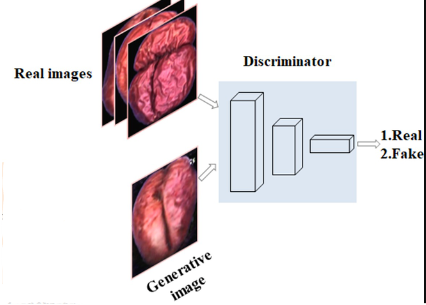

v.
Overview
Generative Models
Generative vs. Discriminative
- We've learnt NN, Deep NN, and CNN already
- A class of logistical models used for classification or regression - discriminative models
- They can reveal underlying hidden structure of data
- More interesting question: can we find a model that can produce same (or at least similar) distributions as the training data?
- towards generative approach
Generative Example
Generative Approach
The traditional approach is Maximum likelihood estimation (MLE)

Figure from Ian Goodfellow, Tutorial on Generative Adversarial Networks, 2017
Why GAN?
- Can make use of latent information while sample generation
- Latent information are those that cannot be directly observed
- No Markov Chain assumption - direct method
- Asymptotically consistent (claims to recover true distribution)
- Samples produced are high-quality
- Learn to generate by playing a 2-player game!
Generative Adversarial Network (GAN)
Generative Adversarial Network (GAN)
- What is GAN?
- Generative: it's a generative model that learns the underlying distribution from data
- Adversarial: two competing networks (adversaries) that try to beat each other
- Network: it is a type of neural networks
Generator

- Produces "fake" data from random noises
- Learn to generate data to "fool" the discriminator
- Gradually find the latent variables transformation to the domain space
Discriminator
- Simply a binary classifier ((C)NN) - convolutional layers for image data
- The inputs are real and fake data generated by the generator
- Try to distinguish between "fake" and real data
GAN = Generator + Discriminator
- GAN: 2-player competing game that combines generator and discriminator as one big network $$\begin{rcases} \boxed{Random \atop Noise} & \xRightarrow{\fcolorbox{red}{orange}{\color{black}Generator}} & Fake\> Data \\ \boxed{Real \atop Dataset} & \xRightarrow{\>\>\>\> Load \>\>\>\>\>} & Real\> Data \end{rcases} \xRightarrow{\fcolorbox{red}{pink}{\color{black}Discriminator}} \begin{cases} \color{red}Fake \\ \color{lime}Real \end{cases}$$
- Generator (G): turns noise into an imitation of the data; tries to trick the discriminator
- Discriminator (D): classifies the input; tries to identify which one is fake and which on is real
- Question: how can we train this network?
Train a GAN

- 2 Player Game: need train 2 neural networks
- Which network should we train first, G or D$\qquad\qquad\qquad\qquad\qquad\qquad$
- answer: D - Why - answer: data is ready!
- D is a binary classifier: real or fake
- Real data: the training set; Fake data: from generator
- Train the 2 network (almost) simultaneously!
Summary
- History of evolutionary algorithms
- Genetic algorithm
- Free PCG Book
Questions?